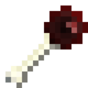
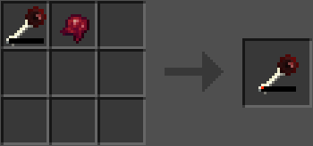
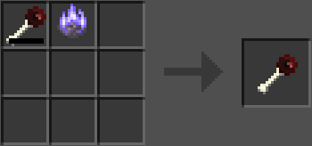

Скіпетр висмоктування життя
Скіпетр висмоктування життя — це один з скіпетрів, який можна отримати після вбивства Сутінкового Ліча. Він, як не дивно, висмоктує життєву енергію з будь-якого моба, на якого натиснути правою кнопкою миші. Під час використання скіпетра з'являється лінія рожевих часточок, яка з'єднує його з ціллю та повільно завдає їй шкоди. Завдаючи шкоди цілі, скіпетр зцілюває власника. Якщо передачу цієї магічної енергії перервати на пів шляху, на ворога накладається ефект Сповільнення. Скіпетр не працює на босів.
- Міцність: 99
- Складається: ні
- Відновлюваний: ні
- ID: twilightforest:lifedrain_scepter


